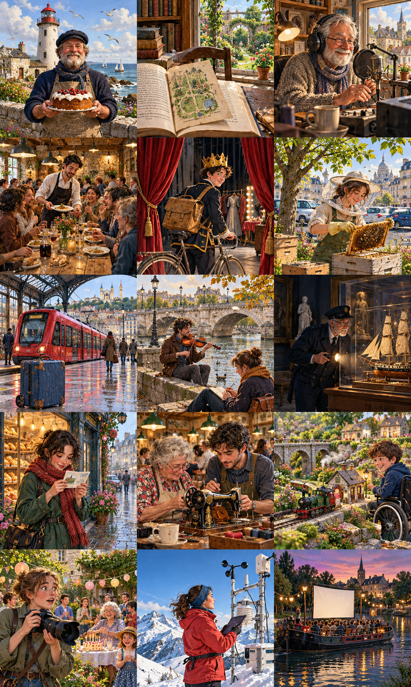

Le violon sous le pont
The Violin Under the Bridge
A student hears an unfinished melody under a bridge and discovers why its musician keeps stopping.

Pour aller à son cours du soir, Clara traversait chaque semaine le même pont. Depuis quelque temps, elle y entendait un violon. La musique montait de la promenade au bord de l'eau, mais elle s'arrêtait toujours au même endroit. Un jeudi, Clara descendit l'escalier pour écouter. Le musicien était un homme aux cheveux gris qui jouait devant un étui fermé. Il ne demandait pas d'argent et semblait surtout agacé par sa propre mélodie.
Show English translationHide English translation
To go to her evening class, Clara crossed the same bridge every week. Lately, she had been hearing a violin there. The music rose from the riverside walkway, but it always stopped at the same point. One Thursday, Clara went down the stairs to listen. The musician was a grey-haired man playing in front of a closed case. He was not asking for money and seemed mainly annoyed by his own tune.
Elle attendit qu'il baisse son instrument, puis demanda pourquoi il ne jouait jamais la fin. L'homme, qui s'appelait Victor, expliqua qu'il avait inventé cet air avec son frère pendant leur jeunesse. Ils souhaitaient le rejouer pour l'anniversaire de leur sœur, mais avaient oublié plusieurs mesures. Son frère vivait loin et envoyait des enregistrements qui ne résolvaient rien. Sous le pont, le son lui rappelait leur ancienne maison, où ils répétaient dans un grand couloir.
Show English translationHide English translation
She waited until he lowered his instrument, then asked why he never played the ending. The man, whose name was Victor, explained that he had invented this tune with his brother when they were young. They wanted to play it again for their sister's birthday but had forgotten several bars. His brother lived far away and sent recordings that did not solve anything. Under the bridge, the sound reminded him of their old house, where they rehearsed in a large hallway.
Clara apprenait le piano depuis seulement deux ans. Elle n'osait pas donner de conseil à un musicien aussi expérimenté. Pourtant, elle avait remarqué quelque chose : Victor reprenait toujours depuis le début après son erreur. « Et si vous commenciez par le passage que vous cherchez ? » proposa-t-elle. Il essaya, sans succès. Puis Clara fredonna les quelques notes qu'elle attendait naturellement. Victor la regarda, surpris. Ce n'était pas la bonne suite, mais l'idée lui plaisait.
Show English translationHide English translation
Clara had been learning the piano for only two years. She did not dare give advice to such an experienced musician. Yet she had noticed something: Victor always started from the beginning again after his mistake. 'What if you started with the passage you are looking for?' she suggested. He tried, without success. Then Clara hummed the few notes she naturally expected. Victor looked at her in surprise. It was not the right continuation, but he liked the idea.
La semaine suivante, il lui apporta une partition incomplète. Ils travaillèrent assis sur un banc, en comparant plusieurs fins possibles. Clara rata son cours, mais prévint son professeur, qui lui demanda de lui montrer leur travail. Ensemble, ils trouvèrent un accompagnement simple. Victor envoya le résultat à son frère. Celui-ci répondit rapidement : il avait retrouvé un vieux cahier dans son grenier. La vraie fin était enfin revenue, après presque quarante ans de silence dans une boîte.
Show English translationHide English translation
The following week, he brought her an unfinished score. They worked sitting on a bench, comparing several possible endings. Clara missed her class but informed her teacher, who asked her to show him their work. Together, they found a simple accompaniment. Victor sent the result to his brother. He replied quickly: he had found an old notebook in his attic. The real ending had finally returned, after almost forty years of silence in a box.
Pour l'anniversaire, les deux frères jouèrent leur morceau original. Puis Victor invita Clara au piano pour présenter la nouvelle version. Leur sœur préféra la seconde et demanda qu'on la rejoue. Clara comprit qu'elle n'avait pas besoin d'attendre de devenir excellente pour participer. Maintenant, lorsqu'elle passe sur le pont, elle descend parfois saluer Victor. Il joue des morceaux entiers, mais laisse volontairement certaines phrases ouvertes pour que les promeneurs qui s'arrêtent puissent proposer leur propre suite.
Show English translationHide English translation
For the birthday, the two brothers played their original piece. Then Victor invited Clara to the piano to present the new version. Their sister preferred the second and asked them to play it again. Clara realised that she did not need to wait until she was excellent to take part. Now, when she crosses the bridge, she sometimes goes down to greet Victor. He plays complete pieces but deliberately leaves certain phrases open so that passers-by who stop can suggest their own continuation.